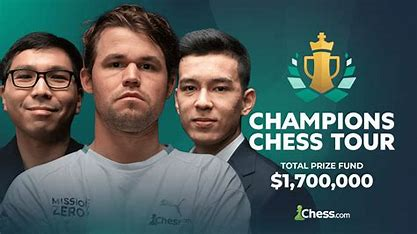
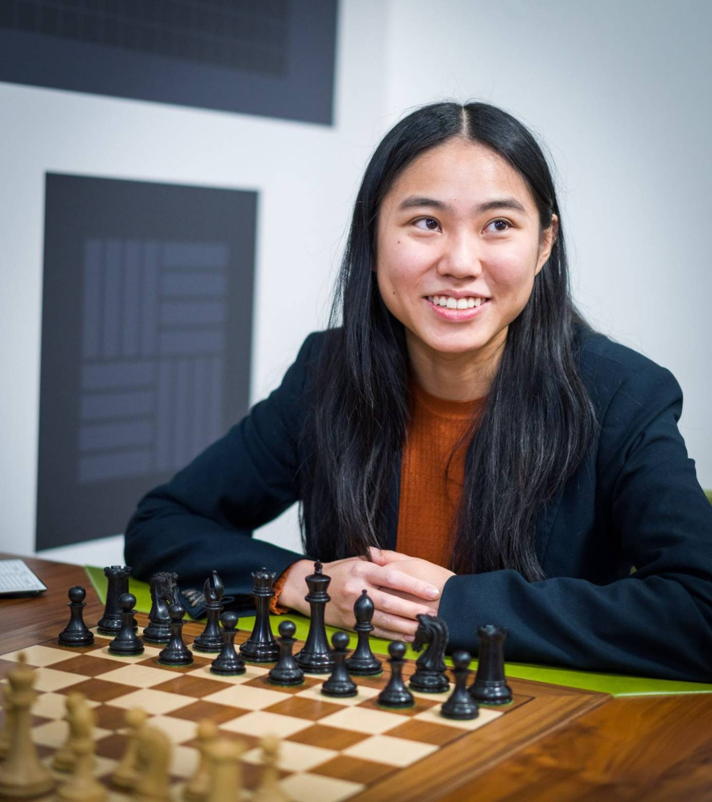
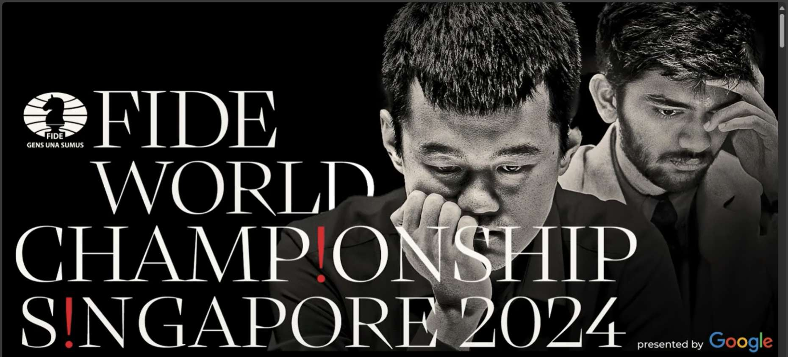

Τα τελευταία νέα από τον κόσμο του σκακιού περιλαμβάνουν εντυπωσιακές αναμετρήσεις και ανατροπές σε σημαντικά τουρνουά ανάμεσα σε κορυφαίους σκακιστές.
Μείνετε συντονισμένοι για περισσότερα κάθε μέρα!

Στο Πρωτάθλημα Σκακιστών του Chessable Masters 2024
O Magnus Carlsen επικράτησε επί του Denis Lazavik σε μια σειρά αγώνων γεμάτη αγωνία,
κερδίζοντας την ευκαιρία να αγωνιστεί στον μεγάλο τελικό. Η αναμέτρηση των δύο είχε ιστορική σημασία,
καθώς ο Lazavik κατάφερε να νικήσει τον Carlsen για πρώτη φορά, όμως τελικά ο Carlsen εξασφάλισε τη νίκη! Πηγή: Chessbase.com

Tο Πρωτάθλημα Σκακιστών των ΗΠΑ παραμένει καυτό
Η Carissa Yip οδηγεί την κούρσα στη γυναικεία κατηγορία με ένα εντυπωσιακό σερί 6 νικών,
ενώ ο Fabiano Caruana διατηρεί τη δυναμική του στην ανοιχτή κατηγορία.
Η διοργάνωση έχει επίσης τραβήξει την προσοχή λόγω μιας αναταραχής σχετικά με τον Christopher Yoo,
ο οποίος απομακρύνθηκε προσωρινά από το τουρνουά λόγω ενός περιστατικού. Πηγή: Chess.com

FIDE Παγκόσμιο Σκακιστικό Πρωτάθλημα 2024
Tο Πρωτάθλημα βρίσκεται σε πλήρη εξέλιξη. Η αναμέτρηση για το παγκόσμιο τίτλο θα πραγματοποιηθεί
στη Σιγκαπούρη από τις 20 Νοεμβρίου έως τις 15 Δεκεμβρίου 2024, με το χρηματικό έπαθλο να φτάνει τα 2,5 εκατομμύρια δολάρια.
Ένα από τα βασικά θέματα της διοργάνωσης είναι η συμμετοχή του Magnus Carlsen, αν και υπάρχει συζήτηση για το αν θα είναι
ο αντίπαλος του τίτλου ή αν θα παραμείνει απλώς ως θεατής, λόγω των πρόσφατων δηλώσεών του! Πηγή: Wikipedia.org